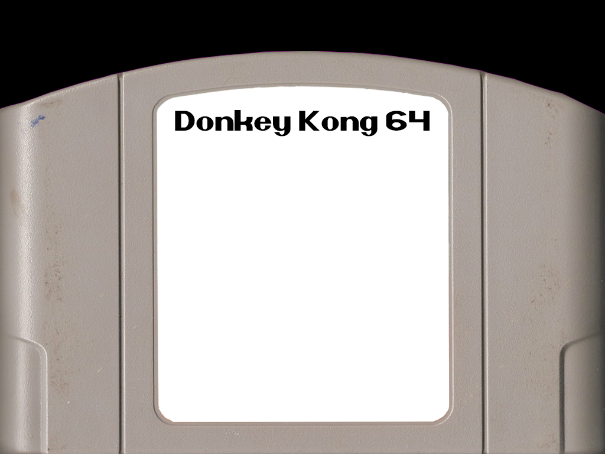

Donkey Kong 64 is a 1999 adventure platform video game for the Nintendo 64 console, and the first in the Donkey Kong series to feature 3D gameplay. As the gorilla Donkey Kong, the player explores the themed levels of an island to collect items and rescue his kidnapped friends from King K. Rool.